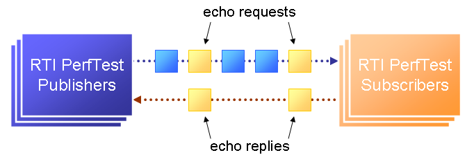

RTI Perftest 5.2.5
1 Testing Performance
This document describes how to run a combined latency and throughput test application for RTI Connext DDS.
The test measures what is sometimes called loaded latency -- latency at a given throughput level. It can help you answer questions such as:
For a given publishing configuration (e.g., queue size, batching settings), sample size, and subscribing configuration (e.g., queue size, Listener vs. WaitSet) what is the throughput of my network?
When my network is heavily loaded, what latency can I expect?
For a given configuration, what is the best-case latency with no other traffic on the network?
For examples of specific configurations, see See Example Command Lines for Running the Performance Test.
This performance test is implemented in C++ (Traditional and Modern APIs), C# and Java.
Note: All references in this document to “C++” refer to both the Traditional and Modern C++ APIs unless otherwise noted.
2 Supported Platforms
RTI Perftest makes use of the RTI Connext DDS Rtiddsgen tool in order to generate part of its code and also the makefile/project files used to compile that code.
RTI Perftest scripts works for every platform for which Rtiddsgen can generate an example, except for those in which Rtiddsgen doesn't generate regular makefiles or Visual Studio Solutions but specific project files. That is the case of Android platorms as well as the iOS ones.
Certain platforms will compile with the out of-the-box code and configurations, but further tuning could be needed in order to make the application run in the specific platform. The reason is usually the memory consumption of the application or the lack of support of the platform for certain features (like a file system).
If you need help with the compilation or execution process, contact support@rti.com.
3 Release Notes
RTI Perftest 5.2.5 Compatibility
RTI Perftest 5.2.5 is designed to compile and work against the RTI Connext DDS 5.2.5 release.
In addition, it is also compatible with RTI Connext DDS 5.2.3 and 5.2.4 releases. However, since the build scripts make use of certain specific parameters in Rtiddsgen the --secure and --openssl-home parameters will not work.
What's New in 5.2.5
Platform support and build system
RTI Perftest 5.2.5 makes use of the RTI Connext DDS Rtiddsgen tool in order to generate part of its code and also the makefile/project files used to compile that code.
Therefore, all the already generated makefiles and Visual Studio solutions have been removed and now the build system depends on 2 scripts: build.sh for Unix-based systems and build.bat for Windows systems.
RTI Perftest scripts works for every platform for which Rtiddsgen can generate an example, except for those in which Rtiddsgen doesn't generate regular makefiles or Visual Studio Solutions but specific project files. That is the case of Android platforms as well as the iOS ones.
Certain platforms will compile with the out of-the-box code and configurations, but further tuning could be needed in order to make the application run in the specific platform. The reason is usually the memory consumption of the application or the lack of support of the platform for certain features (like a file system).
Improved directory structure
RTI Perftest 5.2.5 directory structure has been cleaned up, having now a much more compact and consistent schema.
Github
RTI Perftest development has been moved to a GitHub project. This will allow more frequently updates and code contributions.
The URL of the project is the following: github.com/rticommunity/rtiperftest.
Documentation
Documentation is no longer provided as a PDF document, but as markdown files as well as in html format. You will be able to access to the documentation from the RTI Community page, as well as from the GitHub project.
Support for UDPv6
Added command line parameter to force communication via UDPv6. By specifying -enableUdpv6 you will only communicate data by using the UDPv6 transport.
The use of this feature will imply setting the NDDS_DISCOVERY_PEERS environment variable to (at least) one valid IPv6 address.
Support for Dynamic data
Added command line parameter to specify the use of the Dynamic Data API instead of the regular Rtiddsgen generated code use.
Simplified execution in VxWorks kernel mode
The execution in VxWorks OS kernel mode has been simplified for the user. Now the user can make use of subscriber_main() and publisher_main() and modify its content with all the parameters required for the tests.
Decreased Memory Requirements for Latency Performance Test
The default number of iterations (samples sent by the performance test publisher side) when performing a latency test has been updated. Before, the default value was 100,000,000. This value was used to internally allocate certain buffers, which imposed large memory requirements. The new value is 10,000,000 (10 times less).
What's Fixed in 5.2.5
RTI Perftest behavior when using multiple publishers
The previous behavior specified that an RTI Perftest Subscriber in a scenario with multiple RTI Perftest Publishers would stop receiving samples and exit after receiving the last sample from the RTI Perftest Publisher with pid=0. This behavior could lead into an hang state if some RTI Perftest Publishers with different pid were still missing to send new samples.
The new behavior makes the RTI Perftest Subscriber wait until all the Perftest Publishers finish sending all their samples and then exit.
Possible std::bad_alloc and Segmentation Fault in Latency Test in case of insufficient memory
When performing a latency performance test with traditional or modern C++, the test tries to allocate certain arrays of unsigned longs. These arrays can be quite large. On certain embedded platforms, due to memory limitations, this caused a std::bad_alloc error that was not properly captured, and a segmentation fault. This problem has been resolved. Now the performance test will inform you of the memory allocation issue and exit properly.
Default Max Number of Instances on Subscriber Side Changed to DDS_LENGTH_UNLIMITED
In the previous release, if you did not set the maximum number of instances on the subscriber side, it would default to one instance. Therefore the samples for all instances except the first one were lost.
The new default maximum number of instances on the subscriber side has been changed from one to DDS_LENGTH_UNLIMITED. You can change this limit manually by setting the parameter -instances <number>.
Error when using Shared Memory and Large Samples
When using RTI Perftest with large samples and enabling shared memory we could get into the following error:
Large data settings enabled (-dataLen > 63000).
[D0001|ENABLE]NDDS_Transport_Shmem_Property_verify:received_message_count_max < 1
[D0001|ENABLE]NDDS_Transport_Shmem_newI:Invalid transport properties.
Known Issues
RTI Perftest 5.2.5 version compatibility
RTI Perftest 5.2.5 build system makes use of specific features from RTI Connext DDS 5.2.5 Code Generator (rtiddsgen) in order to generate the makefile/project files used to compile. This implies the break of compatibility with previous RTI Connext DDS releases.
Compiling manually on Windows when using the RTI Security plugin
rtiddsgen generated solutions for Windows allow 4 different configurations:
- Debug
- Debug DLL
- Release
- Release DLL
However, RTI Perftest 5.2.5 new build system is focused to only compile one of those modes at a time when using the -secure option. You can still select which one will be used by using the -debug and -dynamic flags.
4 Overview
The publishing side of the test writes data as fast as it can. Every few samples (configured through the command line), it sends a special sample requesting an echo from the subscribing side. It uses this request -> echo exchange to measure round-trip latency.

As you will see in Section 8, there are several command-line options, including ones to designate whether the application will act as the publisher or subscriber.
You will start multiple copies of the application (typically 1 publisher and 1 or more subscribers):
- The publishing application publishes throughput data; it also subscribes to the latency echoes.
- The subscribing applications subscribe to the throughput data, in which the echo requests are embedded; they also publish the latency echoes.
The publisher prints the latency test results meanwhile the subscriber prints the throughput results.
5 Download Instructions
RTI Perftest bundle is provided in 3 different ways:
You can clone it from the official Github repository:
git clone -b 5.2.5 https://github.com/rticommunity/rtiperftest.gitThis command will download the Github repository and create a folder named
rti_perftest.You can download a zip file containing the RTI Perftest files from the RTI Perftest Github page: github.com/rticommunity/rtiperftest. Once the zip file is downloaded you will need to extract its content, this will create a folder named
rti_perftest.You can download the zip bundle from RTI Community Forum, http://community.rti.com. Search for
Performance Test. Once the zip file is downloaded you will need to extract its content, this will create a folder namedrti_perftest.
If you need help with the download process, contact support@rti.com.
6 Code Generation And Compilation
Unix systems
For Unix systems, RTI Perftest makes use of a script in the top level directory named build.sh.
The purpose of build.sh is to, in the first place, invoke RTI DDS Generator (Rtiddsgen) in order to generate the type-code files and makefiles needed to compile a target architecture. Then, in second place, execute the makefile with the right arguments to generate the executables.
This script supports the code generation and compilation for Traditional C++, Modern C++ and Java.
Potentially, build.sh can generate and compile code for every architecture supported by Rtiddsgen where a makefile is generated as output when the -example command line is specified.
Prerequisites
RTI Connext DDS should be installed in the system where the
build.shscript is going to run. The Target libraries for the platform to be generated should also be installed.The
$NDDSHOMEenvironment variable should be set correctly. Alternatively,$NDDSHOMEcan be passed directly to thebuild.shscript by using the--nddshome <PATH>command line option.The
build.shscript is written inbash. It is going to try to execute it from/bin/bash.GNU makeis required to be accessible from the$PATHenvironment variable in order to execute themakefilesgenerated by Rtiddsgen. Alternatively theGNU makeexecutable can be passed directly to thebuild.shscript by using the--make <PATH>command line option.The C++ Compiler/Linker parent folders should be in the
$PATHvariable. The names of the compiler and linker are going to be determined by the makefile generated by Rtiddsgen. The C++ Compiler and Linker are not required if the script is set to avoid the C++ compilation by adding the--skip-cpp-buildand--skip-cpp03-buildcommand line options.Java JDK should be available in the system and accessible from the
$PATHenvironment. This is not required if the script is set to avoid the Java ByteCode generation by adding the--skip-java-buildcommand line option.If you intend to compile and test using the RTI Secure Plugin you will need to link against the OpenSSL libraries for your architecture.
Parameters
The build.sh script accepts the following list of parameters:
| Parameter | Required | Description |
|---|---|---|
| --platform | Required | Architecture/Platform for which build.sh is going to compile RTI Perftest. |
| --nddshome | Optional | Path to the RTI Connext DDS installation. If this parameter is not present, the $NDDSHOME variable should be. |
| --skip-java-build | Optional | Avoid Java ByteCode generation and .jar creation. |
| --skip-cpp-build | Optional | Avoid C++ code generation and compilation. |
| --skip-cpp03-build | Optional | Avoid C++ New PSM code generation and compilation. |
| --dynamic | Optional | Compile using the RTI Connext DDS dynamic libraries. Default: Static Libraries. |
| --debug | Optional | Compile using the RTI Connext DDS debug libraries. Default: Release Libraries. |
| --secure | Optional | Enable the compilation of the Perfest code specific for security and adds the RTI Connext DDS Security Libraries in the linking step (if compiling statically). Default: Not set. |
| --openssl-home | Optional | Path to the openSSL home directory. Needed when compiling using the --secure option and statically. |
| --make | Optional | Path to the GNU make executable. If this parameter is not present, GNU make variable should be available from your $PATH variable. |
| --java-home | Optional | Path to the Java JDK home folder. If this parameter is not present, javac, jar and java executables should be available from your $PATH variable. |
| --clean | Optional | If this option is present, the build.sh script will clean all the generated code and binaries from previous executions. |
| --help -h | Optional | If this option is present, the build.sh script will display a help description and exit. |
Examples Running build script
In order to build using build.sh you just need to invoke the script with the command line parameters desired. The following are some typical examples:
Generation and compilation for a given architecture (
x64Darwin15clang7.0) for C++ (Classic and new) and Java ../build.sh --platform x64Darwin15clang7.0Generation and compilation for a given architecture (
x64Darwin15clang7.0) just for C++ (Classic and new)../build.sh --platform x64Darwin15clang7.0 --skip-java-buildGeneration and compilation for a given architecture (
x64Darwin15clang7.0) for all supported languages and linking against the Dynamic + Debug libraries../build.sh --platform x64Darwin15clang7.0 --dynamic --debugGeneration and compilation for a given architecture (
x64Darwin15clang7.0) for all supported languages, enabling the security options and linking statically (default)../build.sh --platform x64Darwin15clang7.0 --secure --openssl-home <PATH>Generation and compilation for a given architecture (
x64Darwin15clang7.0) for all supported languages, enabling the security options and linking dynamically. As you can see in this case there is no need to specify the--openssl-homecommand line argument../build.sh --platform x64Darwin15clang7.0 --secure --dynamicRTI Perftest directory clean-up.
./build.sh --clean
Windows systems
For Windows systems, RTI Perftest makes use of a script in the top level directory named build.bat. Its content is equivalent to the build.sh described before.
The purpose of build.bat is to invoke RTI DDS Generator (Rtiddsgen) in order to generate the type-code files and Visual Studio solution needed to compile a target architecture. Then execute the Visual Studio solution with the right arguments to generate the executables.
This script supports the code generation and compilation for Traditional C++, Modern C++, C# and Java.
The build.bat script should be able to generate and compile code for every Windows architecture supported by Rtiddsgen when the -example command line is specified.
Prerequisites
RTI Connext DDS should be installed in the system where the
build.batscript is going to run. The Target libraries for the platform to be generated should also be installed.The
%NDDSHOME%environment variable should be set correctly. Alternatively,%NDDSHOME%can be passed directly to thebuild.batscript by using the--nddshome <PATH>command line option.The Microsoft Visual Studio for the architecture intended to be built should be installed in your system. The
msbuild.exeprogram should be available in the%PATH%variable. [See note-1]Java JDK should be available in the system and accessible from the
%PATH%environment. This is not required if the script is set to avoid the Java ByteCode generation by adding the--skip-java-buildcommand line option.If you intend to compile and test using the RTI Secure Plugin you will need to link against the OpenSSL libraries for your architecture.
[note-1]: The simplest way to run the build.bat script and ensure that all the Microsoft Visual Studio variables are correctly set is by running it from the Visual Studio Command Prompt provided by each of the Microsoft Visual Studio versions.
Parameters
The build.bat script accepts the following list of parameters:
| Parameter | Required | Description |
|---|---|---|
| --platform | Required | Architecture/Platform for which build.bat is going to compile RTI Perftest. |
| --nddshome | Optional | Path to the RTI Connext DDS installation. If this parameter is not present, the %NDDSHOME% variable should be. |
| --skip-java-build | Optional | Avoid Java ByteCode generation and .jar creation. |
| --skip-cpp-build | Optional | Avoid C++ code generation and compilation. |
| --skip-cpp03-build | Optional | Avoid C++ New PSM code generation and compilation. |
| --skip-cs-build | Optional | Avoid C# code generation and compilation. |
| --dynamic | Optional | Compile using the RTI Connext DDS dynamic libraries. Default: Static Libraries. |
| --debug | Optional | Compile using the RTI Connext DDS debug libraries. Default: Release Libraries. |
| --secure | Optional | Enable the compilation of the Perfest code specific for security and adds the RTI Connext DDS Security Libraries in the linking step (if compiling statically). Default: Not set. |
| --openssl-home | Optional | Path to the openSSL home directory. Needed when compiling using the --secure option and statically. |
| --msbuild | Optional | Path to the msbuild.exe executable. If this parameter is not present, msbuild variable should be available from your %PATH% variable. |
| --java-home | Optional | Path to the Java JDK home folder. If this parameter is not present, javac, jar and java executables should be available from your %PATH% variable. |
| --clean | Optional | If this option is present, the build.bat script will clean all the generated code and binaries from previous executions. |
| --help -h | Optional | If this option is present, the build.bat script will display a help description and exit. |
Examples Running build script
In order to build using build.bat you just need to invoke the script with the command line parameters desired. The following are some typical examples:
Simple generation and compilation for a given architecture (
x64Win64VS2012) for C++ (Classic and new) C# and Java.build.bat --platform x64Win64VS2012Simple generation and compilation for a given architecture (
x64Win64VS2012) just for C#.build.bat --platform x64Win64VS2012 --skip-java-build --skip-cpp-build --skip-cpp03-buildGeneration and compilation for a given architecture (
x64Win64VS2012) for all supported languages and linking against the Dynamic + Debug libraries../build.sh --platform x64Win64VS2012 --dynamic --debugGeneration and compilation for a given architecture (
x64Win64VS2012) for all supported languages, enabling the security options and linking statically (default)../build.sh --platform x64Win64VS2012 --secure --openssl-home <PATH>Generation and compilation for a given architecture (
x64Win64VS2012) for all supported languages, enabling the security options and linking dynamically. As you can see in this case there is no need to specify the--openssl-homecommand line argument../build.sh --platform x64Win64VS2012 --secure --dynamicRTI Perftest directory clean-up.
build.bat --clean
7 Modify RTI Perftest for Larger Samples
By default RTI Perftest can send samples up to 128 KB, in order to test for larger samples the following changes are needed:
Changes in the idl:
Change the content of the srcIdl/perftest.idl source file so the maximum size of the sequence containing the data fits your desired size:
const long MAX_BINDATA_SIZE = <NEW_SIZE>;
Changes in the resource limits in the QoS profile
RTI Perftest is designed to allocate a big amount of samples in the reader queues, this helps increasing the performance when working with small sample sizes.
However, since you are increasing the size of the samples, now you could get into a position where the RTI Connext DDS libraries try and fail to allocate so much memory in the reader side.
This scenario is resolved by modifying the QoS profiles used by the RTI Perftest application. In order to do so, you will need to modify the following QoS profile in the perftest_qos_profiles.xml file:
<qos_profile name="ThroughputQos" base_name="BaseProfileQos">
<datareader_qos>
<resource_limits>
<max_samples>10000</max_samples>
<initial_samples>5000</initial_samples>
<max_samples_per_instance>10000</max_samples_per_instance>
</resource_limits>
<reader_resource_limits>
<max_samples_per_remote_writer>10000</max_samples_per_remote_writer>
</reader_resource_limits>
</datareader_qos>
</qos_profile>
The exact values needed will depend on your specific sample size and the machine available resources. A good idea would be trying decreasing the existing sizes by a x100 factor.
Changes in code
RTI Perftest performs some internal checkings to ensure that the sample size specified by command-line parameter is lower than the maximum allowed. Therefore some changes are required:
Changes in C++
Modify the following line in the srcCpp/MessagingIF.h source file:
static const int MAX_DATA_SIZE = <NEW_SIZE>;
Changes in C++03
Modify the following line in the srcCpp03/MessagingIF.h source file:
static const int MAX_DATA_SIZE = <NEW_SIZE>;
Changes in Java
Modify the following line in the srcJava/com/rti/perftest/TestMessage.java source file:
public static final int MAX_DATA_SIZE = <NEW_SIZE>;
Changes in C#
Modify the following line in the srcCs/MessagingIF.cs source file:
public const int MAX_DATA_SIZE = <NEW_SIZE>;
Changes in the Flow Controller
RTI Perftest will detect that the sample size is bigger than 63000 bytes, so it will set the DataWriters to do Asynchronous writing. This will imply the use of the Flow Controller defined in the perftest_qos_profiles.xml configuration file.
<qos_profile name="BaseProfileQos">
<participant_qos>
<property>
<value>
<element>
<name>dds.flow_controller.token_bucket.fast_flow.token_bucket.max_tokens</name>
<value>30</value>
</element>
<element>
<name>dds.flow_controller.token_bucket.fast_flow.token_bucket.tokens_added_per_period</name>
<value>20</value>
</element>
<element>
<name>dds.flow_controller.token_bucket.fast_flow.token_bucket.bytes_per_token</name>
<value>65536</value>
</element>
<element>
<name>dds.flow_controller.token_bucket.fast_flow.token_bucket.period.sec</name>
<value>0</value>
</element>
<element>
<name>dds.flow_controller.token_bucket.fast_flow.token_bucket.period.nanosec</name>
<value>10000000</value>
</element>
</value>
</property>
</participant_qos>
</qos_profile>
Depending on your sample size, you may need to do further tuning to the Flow Controller values.
8 Test execution
The test is provided in C++ (Modern and Traditional APIs), C#, and Java. The list below identifies how to run the executables, once you have built them, and how to pass configuration parameters to them. For detailed descriptions of the test parameters, see See Test Parameters Section. For example test configurations, see the Example Command Lines section.
When running the test, keep in mind that a throughput test will necessarily place a heavy load on your network and potentially on your CPU(s) as well. For the most accurate results, and the fewest complaints from your coworkers and IT department, run the test when and where you have a subnet to yourself. The test is designed to measure latency under loaded network conditions; it will produce those loads itself: There is no need to produce them externally (and your throughput results may not be meaningful if you do).
C++ and C# executables
The C++ and C# executables are in these directories:
<installation directory>/bin/<architecture>/Release
<installation directory>/bin/<architecture>/Debug
Where <architecture> depends on your architecture, such as i86Linux3gcc4.8.2 or i86Win32VS2012.
You can differentiate the executables for the two C++ implementations (Traditional and Modern) by the name: the Traditional C++ API implementation uses perftest_cpp and the Modern C++ API implementation is named perftest_cpp03.
The test uses an XML configuration file and locates this file based on paths relative to the directory from which the test is run. Therefore, to use this configuration file without the need of adding extra command line parameters:
Traditional C++:
bin/<architecture>/Release/perftest_cpp <-pub|-sub> [parameters] or
bin/<architecture>/Debug/perftest_cpp <-pub|-sub> [parameters]
Modern C++:
bin/<architecture>/Release/perftest_cpp03 <-pub|-sub> [parameters] or
bin/<architecture>/Debug/perftest_cpp03 <-pub|-sub> [parameters]
When using dynamic linking
If you compiled the performance test executable dynamically add the $NDDSHOME/lib/<architecture> folder to:
- The
$LD_LIBRARY_PATHvariable if you are on Linux systems. - The
$DYLD_LIBRARY_PATHvariable if you are on OSX. - The
%PATH%variable (if you are on Windows).
When using RTI Secure DDS Plugin and using dynamic linking
In such case, add the OpenSSL libraries in $OPENSSLHOME/<debug or release>/lib to the $LD_LIBRARY_PATH, $DYLD_LIBRARY_PATH or %PATH% variable:
- On Linux systems, add
$OPENSSLHOME/<debug or release>/libto$LD_LIBRARY_PATH - On OSX systems, add
$OPENSSLHOME/<debug or release>/libto$DYLD_LIBRARY_PATH - On Windows systems, add
%OPENSSLHOME$/<debug or release>/binto%PATH%
Java executable
RTI Perftest provides a .sh script and a .bat script to run the Java jar file. Those scripts are located in:
bin/<debug or release>/perftest_java.shfor UNIX-based systems.bin/<debug or release>/perftest_java.batfor Windows systems.
Since the linking in Java is dynamic, add the $NDDSHOME/lib/<architecture> folder to:
- The
$LD_LIBRARY_PATHvariable if you are on Linux systems. - The
$DYLD_LIBRARY_PATHvariable if you are on OSX. - The
%PATH%variable (if you are on Windows).
Alternatively, when using the RTI Perftest scripts, you can set the environment variable $RTI_PERFTEST_ARCH to your specific architecture and let the script set $LD_LIBRARY_PATH or %PATH% for you. You also need to set the $NDDSHOME environment variable.
For example: If you are using a Windows 32-bit architecture:
set RTI_PERFTEST_ARCH=i86Win32VS2010
If you are using a Windows 64-bit architecture:
set RTI_PERFTEST_ARCH=x64Win64jdk
If you are using the Linux i86Linux3gcc4.8.2 architecture:
export RTI_PERFTEST_ARCH=i86Linux3gcc4.8.2
Make sure java is in your path before running the java example run script.
When using Java on UNIX-based systems with RTI Secure DDS
In such case, add the OpenSSL libraries in $OPENSSLHOME/<debug or release>/lib to the $LD_LIBRARY_PATH or %PATH% variable:
- On Linux systems, add
$OPENSSLHOME/<debug or release>/libto$LD_LIBRARY_PATH - On OSX systems, add
$OPENSSLHOME/<debug or release>/libto$DYLD_LIBRARY_PATH - On Windows systems, add
%OPENSSLHOME$/<debug or release>/binto%PATH%
Launching the application
The test uses an XML configuration file. It locates this file based on its path relative to the directory from which the test is run. To use this configuration file move to RTI Perftest top-level location.
Start the test applications. You can start the publisher or subscribers first, the order does not matter. When selecting your optional parameters, choose parameters that allow the test to run for at least 15 seconds to get any kind of meaningful results. The longer it runs, the more accurate the results will be.
Ideally, you should run the test for at least 180 seconds.
C++ Traditional API
bin/<architecture>/release/perftest_cpp <-pub|-sub> [parameters] or
bin/<architecture>/debug/perftest_cpp <-pub|-sub> [parameters]
C++ Modern API
bin/<architecture>/release/perftest_cpp03 <-pub|-sub> [parameters] or
bin/<architecture>/debug/perftest_cpp03 <-pub|-sub> [parameters]
C# API
bin/<architecture>/release/perftest_cs <-pub|-sub> [parameters] or
bin/<architecture>/debug/perftest_cs <-pub|-sub> [parameters]
Java API
bin/release/perftest_java <-pub|-sub> [parameters]
bin/debug/perftest_java <-pub|-sub> [parameters]
where <architecture> depends on your architecture, such as x64Linux3gcc4.8.2 or i86Win32VS2012.
After the publisher recognizes that the specified number of subscribers (see the See -numSubscribers <count> option) are online and the subscriber recognizes that the specified number of publishers (see the See -numPublishers <count> option) are online, the test begins.
9 Test Parameters
Several parameters are available; you can enter them on the command line. All parameters are optional and case-insensitive; partial matches are allowed (such as -h instead of -help).
Some parameters only make sense in the publishing or subscribing application. The parameters are presented in the following tables, based on whether they may be used in a publishing application, a subscribing application, or both:
- See Test Parameters for Publishing and Subscribing Applications
- See Test Parameters Only for Publishing Applications
- See Test Parameters Only for Subscribing Applications
- See Test Parameters to Control RTI Secure DDS Options
As you will see in the tables, the -pub parameter specifies a publishing application and the -sub specifies a subscribing application. If you do not specify See -pub then -sub is assumed.
For additional information on setting the parameters, see sections:
- Spinning vs. Sleeping
- Send-Queue Size and Queue-Full Behavior
- Number of Iterations vs. Latency Count
- Warming Up
- WaitSet Event Count and Delay
- How to Measure Latency for a Given Throughput
- Auto Tuning and Turbo Mode
Test Parameters for Publishing and Subscribing Applications
-bestEffortUse best-effort communication.
Default:
false(use reliable communication).For an introduction to the RTI reliability model, see the Strict Reliability design pattern in the RTI Connext DDS Core Libraries Getting Started Guide. See also: Reliable Communications in the RTI Connext DDS Core Libraries User’s Manual.
-dataLen <bytes>Length of payload in bytes for each send.
Default:
100 bytes.
Range:28 - 63000 bytesThe lower limit is the number of "overhead" bytes in the message (i.e., the timestamp, sequence number, and other meta-data used by the test); the upper limit ensures that, when the overhead of the wire protocol is added, it doesn't overflow the UDP maximum datagram size of 64KB.
If See
-scanis specified, this value is ignored.-debugRun in debug mode (generates more verbose logging messages, which are useful to RTI support personnel).
Default: false
-dynamicDataRun using the Dynamic Data API functions instead of the rtiddsgen generated calls.
Default: false
-durability <0|1|2|3>Sets the Durability kind:
0-VOLATILE(default)1-TRANSIENT LOCAL2-TRANSIENT3-PERSISTENTFor an introduction to the RTI durability model, see the Historical Data design pattern in the RTI Connext DDS Core Libraries Getting Started Guide. See also: Mechanisms for Achieving Information Durability and Persistence, Chapter 12, in the RTI Connext DDS Core Libraries User’s Manual.
-domain <ID>Domain ID.
The publisher and subscriber applications must use the same domain ID in order to communicate.
Default:
1
Range:0 - 200See Choosing a Domain ID and Creating Multiple Domains, Section 8.3.4, in the RTI Connext DDS Core Libraries User’s Manual.
-enableSharedMemoryEnable the shared memory transport.
Default: shared memory transport is disabled
-enableTcpOnlyDisable all the other transports and use only TCP transport for communication.
Default: TCP transport not enabled
-helpPrint an informative message with all the available command-line parameters and exit.
-instanceHashBuckets <n>Number of hash buckets for instances.
Default:
-1(means same as the number of instances)
Range:> 0-instances <int>Set the number of instances to use in the test. The publishing and subscribing applications must specify the same number of instances.
This option only makes sense when testing a keyed data type; to do so, use See
-keyed.Default:
1
Range:> 0-keepDurationUsec <usec>Minimum duration that a sample is queued for ACK-disabled readers. Only used if See
-noPositiveAcksis specified on the publisher side.See Disabling Positive Acknowledgements, Section 6.5.3.3 in the RTI Connext DDS Core Libraries User’s Manual.
Default:
1000 µsec(1 millisec).
Range:>= 0.-keyedSpecify the use of a keyed type.
Default:
Unkeyedtype.-multicastUse multicast to receive data.
Default: do not use multicast.
-multicastAddress <address>Specify the multicast receive address for receiving user data.
If unspecified, the following default values will be used according to the topic:
latency:
239.255.1.2
throughput:239.255.1.1
announcement:239.255.1.100-nic <ipaddr>Restrict RTI Connext DDS to sending output through this interface. This can be the IP address of any available network interface on the machine.
By default, RTI Connext DDS will attempt to contact all possible subscribing nodes on all available network interfaces. Even on a multi-NIC machine, the performance over one NIC vs. another may be different (e.g., Gbit vs. 100 Mbit), so choosing the correct NIC is critical for a proper test.
-noDirectCommunicationIndicates if the subscribing application will receive samples from the publishing application when RTI Persistence Service is used.
Only applies when
-durability <0|1|2|3>isTRANSIENT (2)orPERSISTENT (3).If set to
true(the default), the subscribing application gets samples from the publishing application and RTI Persistence Service. This mode provides low latency between endpoints.If set to
false, the subscribing application only gets samples from RTI Persistence Service. This brokered communication pattern provides a way to guarantee eventual consistency.Default:
true(direct communication)-nomulticastDo not use multicast.
Note: Starting in 5.1.0, this option is no longer needed since multicast is disabled by default. It exists only to maintain backward compatibility.
Default: Do not use multicast
-noPositiveAcksDisable use of positive ACKs in the reliable protocol.
Default:
true(use positive ACKs)See
-qosprofile <filename>option for more information.-noPrintIntervalsPrevent printing of statistics at intervals during the test.
By default, statistics are printed every second in the subscribing application, and after receiving every latency echo in the publishing application.
-qosprofile <filename>Path to the XML file containing DDS QoS profiles.
Default:
perftest_qos_profiles.xmlThe default file contains these QoS profiles:
TheThroughputQos,LatencyQos, andAnnouncementQosprofiles are used by default.
TheNoAckThroughputQosandNoAckLatencyQosprofiles are used if you specify-noPositiveAcks.Note: some QoS values are ‘hard-coded’ in the application, therefore setting them in the XML file has no effect; see the See Note:.
See comments in
perftest_qos_profiles.xml, as well as Configuring QoS with XML, Chapter 17 in the RTI Connext DDS Core Libraries User’s Manual.-useReadThreadUse a separate thread (instead of a callback) to read data.
See See WaitSet Event Count and Delay
Default: use callback for subscriber
-waitsetDelayUsec <usec>Process incoming data in groups, based on time, rather than individually.
Only used if the See
-useReadThreadoption is specified on the subscriber side.See WaitSet Event Count and Delay.
Default:
100
Range:>= 0-waitsetEventCount <count>Process incoming data in groups, based on the number of samples, rather than individually.
Only used if the See
-useReadThreadoption is specified on the subscriber side.See See WaitSet Event Count and Delay.
Default:
5Range:>= 1
Test Parameters Only for Publishing Applications
-batchSize <bytes>Enable batching and set the maximum batched message size.
Default:
0(batching disabled)
Range:1 to 63000For more information on batching data for high throughput, see the High Throughput design pattern in the RTI Connext DDS Core Libraries Getting Started Guide. See also: How to Measure Latency for a Given Throughput and the BATCH QosPolicy, Section 6.5.2 in the RTI Connext DDS Core Libraries Getting User’s Manual.
-enableAutoThrottleEnable the Auto Throttling feature. See Auto Tuning and Turbo Mode.
Default: feature is disabled.
-enableTurboModeEnables the Turbo Mode feature. See See Auto Tuning and Turbo Mode. When turbo mode is enabled, See
-batchSize <bytes>is ignored.Default: feature is disabled.
-executionTime <sec>Allows you to limit the test duration by specifying the number of seconds to run the test.
Default: feature is not set.
-heartbeatPeriod <sec>:<nanosec>The period at which the publishing application will send heartbeats.
See Reliable Communications, Chapter 10, in the RTI Connext DDS Core Libraries Getting User’s Manual.
Default:
heartbeat period sec = 0,heartbeat period nanosec = 0(meaning use the value as specified in the XML QoS Profile, which is set to (10 millisec = 10000000 nanosec)).See
-qosprofile <filename>.Range: 1 nanosec to 1 year (31,536,000 sec.)
-fastHeartbeatPeriod <sec>:<nanosec>An alternative heartbeat period used when the publishing application needs to flush unacknowledged samples more quickly.
See Reliable Communications, Chapter 10, in the RTI Connext DDS Core Libraries Getting User’s Manual.
Default:
heartbeat period sec = 0,heartbeat period nanosec = 0(meaning use the value as specified in the XML QoS Profile, which is set to (1 millisec = 1000000 nanosec)). SeeSee
-qosprofile <filename>.Range: (actual value)
1 nanosecto1 year (31,536,000 sec). Must not be slower than See-heartbeatPeriod <sec>:<nanosec>.-latencyCount <count>Number samples to send before a latency ping packet is sent.
See Number of Iterations vs. Latency Count.
Default:
-1(if-latencyTestis not specified, automatically adjust to 10000; if -latency Test is specified, automatically adjust to 1).Range: must be
<= -numIter-latencyTestRun a latency test consisting of a ping-pong.
The publisher sends a ping, then blocks until it receives a pong from the subscriber.
Can only be used on a publisher whose
pidMultiPubTest = 0(see See-pidMultiPubTest <id>).Default:
false-numIter <count>Number of samples to send.
See Number of Iterations vs. Latency Count and See Warming Up.
If you set
scan=true, you cannot set this option (See-scan).Default:
0(infinite)
Range:latencyCount(adjusted value) or higher (see-latencyCount <count>).-numSubscribers <count>Have the publishing application wait for this number of subscribing applications to start.
Default:
1-pidMultiPubTest <id>Set the ID of the publisher in a multi-publisher test.
Use a unique value for each publisher running on the same host that uses the same domain ID.
Default:
0
Range:0 to n-1, inclusive, where n is the number of publishers in a multi-publisher test.-pubSet test to be a publisher.
Default:
-sub-pubRateLimit the throughput to the specified number of samples per second.
Default:
0(no limit)
Range:1 to 10000000-scanRun test in scan mode, traversing a range of sample data sizes from 32 to 63,000 bytes.
If you set
scan = true, you cannot set-numIter <count>.Default:
false(no scan)-sendQueueSize <number>Size of the send queue.
When
-batchSize <bytes>is used, the size is the number of batches.See Send-Queue Size and Queue-Full Behavior.
Default:
50
Range:[1-100 million]or-1(indicating an unlimited length).-sleep <millisec>Time to sleep between each send.
See Spinning vs. Sleeping.
Default:
0
Range:0or higher-spin <count>Number of times to run in a spin loop between each send.
See Spinning vs. Sleeping.
Default:
0
Range:0or higher
Test Parameters Only for Subscribing Applications
-numPublishers <count>The subscribing application will wait for this number of publishing applications to start.
Default:
1-sidMultiSubTest <id>ID of the subscriber in a multi-subscriber test.
Use a unique value for each subscriber running on the same host that uses the same domain ID.
Default:
0
Range:0 to n-1, inclusive, where n is the number of subscribers in a multi-subscriber test.-subSet test to be a subscriber.
Default:
-sub
Test Parameters to Control RTI Secure DDS Options (Publishing and Subscribing Applications)
-secureEncryptDiscoveryEncrypt discovery traffic.
Default: Not set.
-secureSignSign discovery and user data packages.
Default: Not set.
-secureEncryptDataEncrypt at the user data level.
Default: Not set.
-secureEncryptSMEncrypt at the RTPS sub-message level.
Default: Not set.
-secureGovernanceFile <file>Governance file. If specified, the authentication, signing, and encryption arguments are ignored. The governance document configuration will be used instead.
Default: Not set.
-securePermissionsFile <file>Permissions file to be used.
Default for Publisher:
./resource/secure/signed_PerftestPermissionsPub.xml
Default for Subscriber:./resource/secure/signed_PerftestPermissionsSub.xml-secureCertAuthority <file>Certificate authority file to be used.
Default for Publisher:
./resource/secure/pub.pem
Default for Subscriber:./resource/secure/sub.pem-secureCertFile <file>Certificate file to be used.
Default:
./resource/secure/cacert.pem-securePrivateKey <file>Private key file to be used.
Default for Publisher:
./resource/secure/pubkey.pemDefault for Subscriber:./resource/secure/subkey.pem
Additional information about the parameters
Spinning vs. Sleeping
When the publisher is writing as fast as it can, sooner or later, it is likely to get ahead of the subscriber. There are 4 things you can do in this case:
Nothing -- for reliable communication,
write()will block until the subscriber(s) catch up.Slow the writing down by sleeping (See
-sleep <millisec>). This approach is friendlier to the other processes on the host because it does not monopolize the CPU. However, context switching is expensive enough that you can't actually "sleep" for amounts of time on the order of microseconds, so you could end up sleeping too long and hurting performance. (Operating systems (including Linux and Windows) have a minimum resolution for sleeping; i.e., you can only sleep for a period of 1 or 10 ms. If you specify a sleep period that is less than that minimum, the OS may sleep for its minimum resolution.)Spin in a tight loop between writes (See
-spin <count>). This approach will add a pause without giving up the CPU, making it easier to "sleep" for very short periods of time. In the test implementation, there is a very short loop that just performs some simple math to take up CPU time. The argument to-spin <count>(any number >= 0) is the number of times to go through that loop. The default is 0. If you specify something else, it should be a fairly large number (100’s or 1000’s), since spinning the loop just a few times will take negligible time. Avoid spinning on a single-core machine, as the code that would break you out of the spin may not be able to execute in a timely manner.Let the publisher automatically adjust the writing rate (See
-enableAutoThrottle). This option enables the Auto Throttle feature introduced in RTI Connext DDS 5.1.0 and its usage is preferred over See-spin <count>because the amount of spin is automatically determined by the publisher based on the number of unacknowledged samples in the send queue.
See also: Send-Queue Size and Queue-Full Behavior.
Send-Queue Size and Queue-Full Behavior
In many distributed systems, a data producer will often outperform data consumers. That means that, if the communications are to be reliable, the producer must be throttled in some way to allow the consumers to keep up. In some situations, this may not be a problem, because data may simply not be ready for publication at a rate sufficient to overwhelm the subscribers. If you're not so lucky, your publisher's queue of unacknowledged data will eventually fill up. When that happens, if data is not to be lost, the publication will have to block until space becomes available. Blocking can cost you in terms of latency.
To avoid the cost of blocking, consider the following:
Enlarge your publisher's queue (See
-sendQueueSize <number>). Doing so will mean your publisher has to block less often. However, it may also let the publisher get even further ahead of slower subscribers, increasing the number of dropped and resent packets, hurting throughput. Experimenting with the send queue size is one of the easy things you can do to squeeze a little more throughput from your system.Enable Auto Throttling (See
-enableAutoThrottle). This option enables the Auto Throttle feature introduced in RTI Connext DDS 5.1.0. When this option is used, the publisher automatically adjusts the writing rate based on the number of unacknowledged samples in the send queue to avoid blocking.
Note:
The following values in the DataWriterProtocolQosPolicy are ‘hard-coded’ in the application, therefore setting these values in the XML QoS profile will have no effect:
rtps_reliable_writer.heartbeats_per_max_samplesis set to (sendQueueSize/10)rtps_reliable_writer.low_watermarkis set to (sendQueueSize * 0.10)rtps_reliable_writer.high_watermarkis set to (sendQueueSize * 0.90)
For more information on the send queue size, see the RESOURCE_LIMITS QosPolicy, Section 6.5.20 in the RTI Connext DDS Core Libraries User’s Manual (specifically, the max_samples field).
Number of Iterations vs. Latency Count
When configuring the total number of samples to send during the test (See -numIter <count>) and the number of samples to send between latency pings (See -latencyCount <count>), keep these things in mind:
Don't send latency pings too often. One of the purposes of the test is to measure the throughput that the middleware is able to achieve. Although the total throughput is technically the total data sent on both the throughput and latency topics, for the sake of simplicity, the test measures only the former. The implicit assumption is that the latter is negligible by comparison. If you violate this assumption, your throughput test results will not be meaningful.
Keep the number of iterations large enough to send many latency pings over the course of the test run. Your latency measurements, and the spread between them, will be of higher quality if you are able to measure more data points.
When selecting See
-numIter <count>, choose a value that allows the test to run for at least a minute to get accurate results. Set See-numIter <count>to be millions for small message sizes (<1k); reduce as needed for larger sizes (otherwise the tests will take longer and longer to complete).
Warming Up
When running the performance test in Java, and to a lesser extent, C#, you may observe that throughput slowly increases through the first few incremental measurements and then levels off. This improvement reflects the background activity of the just-in-time (JIT) compiler and optimizer on these platforms. For the best indication of steady-state performance, be sure to run the test for a number of samples (See -numIter <count>) sufficient to smooth out this start-up artifact.
WaitSet Event Count and Delay
RTI Connext DDS, and by extension, this performance test, gives you the option to either process received data in the middleware's receive thread, via a listener callback, or in a separate thread (See -useReadThread) via an object called a WaitSet. The latter approach can be beneficial in that it decouples the operation of your application from the middleware, so that your processing will not interfere with Connext DDS's internal activities. However, it does introduce additional context switches into your data receive path. When data is arriving at a high rate, these context switches can adversely impact performance when they occur with each data sample.
To improve efficiency, the command line parameters -waitsetDelayUsec <usec> and -waitsetEventCount <count> allow you to process incoming data in groups, based on the number of samples and/or time, rather than individually, reducing the number of context switches. Experiment with these values to optimize performance for your system.
For more information, see these sections in the RTI Connext DDS Core Libraries User’s Manual: Receive Threads (Section 19.3) and Conditions and WaitSets (Section 4.6).
How to Measure Latency for a Given Throughput
If you want to measure the minimum latency for a given throughput, you have to use the command-line parameters -sleep <millisec>, -spin <count> and -batchSize <bytes> to experimentally set the throughput level for a given test run.
For example, suppose you want to generate a graph of latency vs. throughput for a packet size of 200 bytes and throughput rates of 1000, 10K, 20K, 50K, 100K, 500K, and Max messages per second.
For throughput rates under 1000 messages per second, use -sleep <ms> to throttle the publishing application. For example, -sleep 1 will produce a throughput of approximately 1000 messages/second; -sleep 2 will produce a throughput of approximately 500 messages/second.
For throughput rates higher than 1000 messages per second, use -spin <spin count> to cause the publishing application to busy wait between sends. The <spin count> value needed to produce a given throughput must be experimentally determined and is highly dependent on processor performance. For example -spin 19000 may produce a message rate of 10000 messages/second with a slow processor but a rate of 14000 messages/second with a faster processor.
Use batching when you want to measure latency for throughput rates higher than the maximum rates of sending individual messages. First, determine the maximum throughput rate for the data size under test without batching (omit See -batchSize <bytes>). For example, on a 1-Gigabyte network, for a data size of 200 bytes, the maximum throughput will be about 70,000 messages/sec. We will refer to this value as max_no_batch.
For all throughput rates less than max_no_batch (e.g., 70,000 messages/sec.), do not use batching, as this will increase the latency.
Use batching to test for throughput rates higher than max_no_batch: start by setting -batchSize to a multiple of the data size. For example, if the data size is 200 bytes, use -batchSize 400 (this will put 2 messages in each batch), -batchSize 800 (4 per batch), etc. This will allow you to get throughput/latency results for throughputs higher than the max_no_batch throughput rate.
Note: For larger data sizes (8000 bytes and higher), batching often does not improve throughput, at least for 1-Gigabyte networks.
Auto Tuning and Turbo Mode
RTI Connext DDS 5.1.0 includes two features that allow the middleware to auto-tune the communications to achieve better performance. These features are Auto Throttling and Turbo Mode. For more information about both features, refer to Sections 10.4, Auto Throttling for DataWriter Performance -- Experimental Feature and 6.5.2.4 Turbo Mode: Automatically Adjusting the Number of Bytes in a Batch -- Experimental Feature in the RTI Connext DDS Core Libraries User's Manual. The performance test application includes two command-line options to enable these features: -enableAutoThrottle and -enableTurboMode.
With Auto Throttling, the publisher automatically adjusts the writing rate based on the number of unacknowledged samples in the send queue to avoid blocking and provide the best latency/throughput tradeoff.
With Turbo Mode, the size of a batch is automatically adjusted to provide the best latency for a given write rate. For slow write rates, the batch size will be smaller to minimize the latency penalty. For high write rates, the batch size will be bigger to increase throughput. When turbo mode is used, the command line option See -batchSize <bytes> is ignored.
To achieve the best latency under maximum throughput conditions, use See -enableAutoThrottle and See -enableTurboMode in combination.
10 Command-Line Examples
The followings are examples of how to run the performance test for different use cases.
The tests below print final results only; if you want to see intermediate values, remove the
-noprintargument from the command line.If you are running on 2 unequal machines, i.e., one machine is faster (has better processors) than another, you will see better performance by running the Publisher on the slower machine.
To measure CPU usage while running these tests, use "top" or a similar utility.
1-to-1, Multicast, Best Latency as a Function of Message Size
- Publisher:
bin/<arch>/Release/perftest_cpp -pub -noPrint -nic <ipaddr> -domain <ID> -latencyCount 1 -dataLen <length> -latencyTest -multicast -executionTime 100
- Subscriber:
bin/<arch>/Release/perftest_cpp -sub -noPrint -nic <ipaddr> -domain <ID> -multicast
Modify -dataLen <bytes> to see latencies for different data sizes. Set -executionTime <seconds> to be >=100 for statistically better results.
1-to-1, Multicast, Maximum Throughput as a Function of Message Size (with Batching)
- Publisher:
bin/<arch>/Release/perftest_cpp -pub -noPrint -nic <ipaddr> -dataLen <length> -batchSize <bytes> -sendQueueSize <number> -multicast -executionTime 100
- Subscriber:
bin/<arch>/Release/perftest_cpp -sub -noprint -nic <ipaddr> -multicast
To achieve maximum throughput, start by setting See -batchSize <bytes> to 6400, then increase the size to see if you get better throughput.
The largest valid batch size is 63000 bytes.
For maximum throughput, start by setting -sendQueueSize <number> to 30; the best value will usually be between 30-50.
Note: For larger data sizes (8000 bytes and higher), batching often does not improve throughput, at least for 1-Gig networks.
1-to-1, Multicast, Latency vs. Throughput for 200-byte Messages (with Batching)
- Publisher:
bin/<arch>/Release/perftest_cpp -pub -noPrint -nic <ipaddr> -dataLen 200 -batchSize <bytes> -sendQueueSize <number> -spin <count> -multicast -executionTime 100
- Subscriber
bin/<arch>/Release/perftest_cpp -sub -noPrint -nic <ipaddr> -multicast
To adjust throughput, experiment with the value of -spin <count>. For example, to get a rate of 10,000 messages/sec, use -spin 20000 to see the resulting rate, then adjust up or down as needed.
1-to-1, Multicast, Reliable UDPv4, All Sizes
- Publisher:
bin/<arch>/Release/perftest_cpp -pub -noPrint -sendQueueSize 32 -latencyCount 10000 -scan -multicast
- Subscriber:
bin/<arch>/Release/perftest_cpp -sub -noPrint -multicast
1-to-1, Unicast, Best-Effort, UDPv4, 1 Size
- Publisher:
bin/<arch>/Release/perftest_cpp -pub -noPrint -sendQueueSize 32 -latencyCount 1000 -dataLen 1024 -bestEffort -executionTime 100
- Subscriber
bin/<arch>/Release/perftest_cpp -sub -noPrint -dataLen 1024 -bestEffort
1-to-1, Multicast, Reliable, UDPv4, Batching Enabled
- Publisher:
bin/<arch>/Release/perftest_cpp -pub -noPrint -sendQueueSize 32 -latencyCount 1000 -dataLen 200 -batchSize 6400 -multicast -executionTime 100
- Subscriber:
bin/<arch>/Release/perftest_cpp -sub -noPrint -dataLen 200 -batchSize 6400 -multicast
1-to-2, Multicast, Reliable, UDPv4
- Publisher:
bin/<arch>/Release/perftest_cpp -pub -noPrint -pidMultiPubTest 0 -sendQueueSize 32 -numSubscribers 2 -latencyCount 1000 -dataLen 200 -multicast -executionTime 100
- Subscriber 1:
bin/<arch>/Release/perftest_cpp -sub -noPrint -dataLen 200 -batchSize 6400 -multicast
- Subscriber 2:
bin/<arch>/Release/perftest_cpp -sub -noPrint -dataLen 200 -batchSize 6400 -multicast
2-to-1, Multicast, Reliable, UDPv4
- Publisher 1:
bin/<arch>/Release/perftest_cpp -pub -noPrint -pidMultiPubTest 0 -sendQueueSize 32 -numSubscribers 1 -latencyCount 1000 -dataLen 200 -multicast -executionTime 100
- Publisher 2:
bin/<arch>/Release/perftest_cpp -pub -noPrint -pidMultiPubTest 1 -sendQueueSize 32 -numSubscribers 1 -latencyCount 1000 -dataLen 200 -multicast -executionTime 100
- Subscriber:
bin/<arch>/Release/perftest_cpp -sub -noPrint -dataLen 200 -numPublishers 2 -sidMultiSubTest 0 -multicast
1-to-1, Unicast, Reliable, UDPv4, Using Security: Signing Packages, Encrypting Data
- Publisher:
bin/<arch>/Release/perftest_cpp -pub -noPrint -dataLen 63000 -secureSign -secureEncryptData -executionTime 100
- Subscriber
bin/<arch>/Release/perftest_cpp -sub -noPrint -dataLen 63000 -secureSign -secureEncryptData
11 Output Example
The following is an example of the expected output from the performance test.
- Publisher:
> perftest_cpp -pub -noPrint -domain 27 -sendQueueSize 50 -latencyCount 10000 -scan Waiting to discover 1 subscribers...
Waiting for subscribers announcement ...
Publishing data...
Length: 32 Latency: Ave 396 us Std 48.9 us Min 83 us Max 538 us 50% 401 us 90% 459 us 99% 510 us 99.99% 538 us 99.9999% 538 us
Length: 64 Latency: Ave 399 us Std 53.1 us Min 88 us Max 1062 us 50% 403 us 90% 461 us 99% 537 us 99.99% 1062 us 99.9999% 1062 us
...
- Subscriber
> bin/i86Linux2.6gcc3.4.3/Release/perftest_cpp -sub -noPrint -domain 27
Waiting to discover 1 publishers ...
Waiting for data...
Length: 32 Packets: 10000000 Packets/s(ave): 47913 Mbps(ave): 12.3 Lost: 0
Length: 64 Packets: 10000000 Packets/s(ave): 47580 Mbps(ave): 24.4 Lost: 0
...
12 Secure Certificates, Governance and Permission Files
The performance test provides a set of already generated certificates, governance and permission files to be loaded when using the RTI Secure DDS plugin. Both governance files and permission files are already signed, so no action is required by the user. These files are located in $(RTIPERFTESTHOME)/resource/certificates.
In addition to the already signed governance and permission files, the original files are also provided (not signed) as well as a bash script with the steps to generate all the signed files. Those files can be found in $(RTIPERFTESTHOME)/resource/certificates/input; the script is in $(RTIPERFTESTHOME)/resource/certificates/make.sh.
13 Optimizing Your OS for Network Performance
The network stacks of popular operating systems are not always tuned for maximum performance out of the box. RTI has found that the following configuration changes frequently improve performance for a broad set of demanding applications. Consider testing your network performance with and without these changes to learn if they can benefit your system.
Optimizing Linux Systems
Edit the file /etc/sysctl.conf and add the following:
net.core.wmem_max = 16777216
net.core.wmem_default = 16777216
net.core.rmem_max = 16777216
net.core.rmem_default = 16777216
net.ipv4.tcp_rmem = 4096 16777216 33554432
net.ipv4.tcp_wmem = 4096 16777216 33554432
net.ipv4.tcp_mem = 4096 16777216 33554432
run /sbin/sysctl -p
Optimizing Windows Systems
From the Start button, select Run..., then enter
regedit.Change this entry:
HKEY_LOCAL_MACHINE\SYSTEM\CurrentControlSet\ Services\Tcpip\Parameters- Add the
DWORDkey:MaximumReassemblyHeaders - Set the value to
0xffff(this is the max value) - See http://support.microsoft.com/kb/811003 for more information.
- Add the
Change this entry:
HKEY_LOCAL_MACHINE\SYSTEM\CurrentControlSet\ Services\AFD\Parameters- Add the
DWORDkey:FastSendDatagramThreshold - Set the value to
65536(0x10000) See http://support.microsoft.com/kb/235257 for more information.
- Add the
Reboot your machine for the changes to take effect.